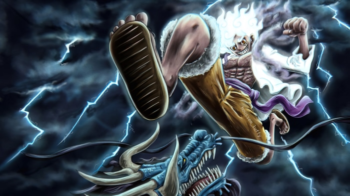

One Piece WG 4.1

ChangeLog:
- Ilha: Baratie
- Ilha: Arlong Park
- Novas Raças
- Adicionado estilo de luta: Black Leg
- Adicionado estilo de luta: Nitoryu Oden
- Adicionado espada: Mogura
- Adicionado devil fruit: Suke Suke no Mi (Invisibilidade)
- Jogabilidade atualizada para: Survival
Compatibilidade:
- Mcpe 1.20.12
- Atualizado: 12/08/2023
DOWNLOAD:
Resource Packs: > Download <
Behavior Packs: > Download <
Criador da Addon: MugiwaraWg